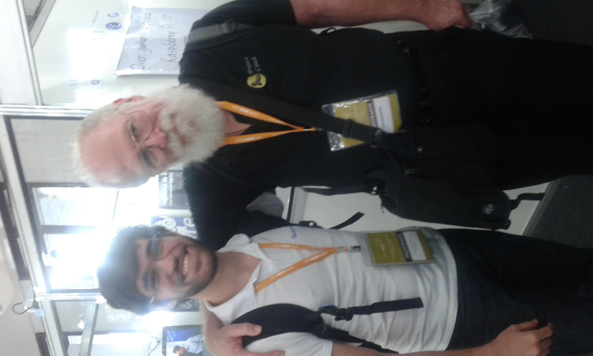

Latinoware 2013: Report on 16th October.
Marcel Ribeiro Dantas [mribeirodantas at fedoraproject.org]
Published on October, 23th. (Last modified on: October, 23th)
Today was the first day of the tenth edition of the Free Software Latin-American Conference, known as Latinoware. Differently from some Fedora fellows, it was the first edition I had the chance to attend, reason for why I'm so excited about it. I'm just lovin' it!
This year the event had an astonishing number of 4620 participants, which is a record (though it's just slightly bigger than last year's attendee number). During the day, from 10 am till 7 pm we had several talks scattered in 9 spaces (gently called as some latin american countries). We had to divide our time in attending talks, giving ours and staying at the Fedora booth, that was gently provided by Latinoware organization, just beside Red Hat's and RDO's booths.
It was an honour to me to basically open the Peru space. My talk "Fedora: Sharing thoughts, experiences and passion" was one of the 8 first talks of Latinoware, at 11 am, just after the opening keynote at 10 am by John "Maddog" Hall.
I didn't believe it would be that crowded since it was not only early on the first day but also relatively specific to a slice of the community. At the end, the public was very nice. We had a full room at some points of the talk and in the average there was at least 40 people watching. People were very participative and asked several questions. I loved it :)
Later at 4pm most of us moved to Uruguai space to watch "Beyond the 4 Fs: What is Fedora effectively doing for Open Source?" presented to us by Daniel Bruno and Leonardo Vaz. It was an enhancement of the 0.1 version (in the words of Leonardo) that he presented along with Fabio Olivé at FISL this very same year. Very interesting, some details of the history of Fedora plus some features were presented to us.
Last, but not least, I couldn't forget to mention Juan (Fedora Paraguay) and Eduardo - aka echevemaster - (Fedora Venezuela). Juan kindly picked me up at the airport and joined us for the event. He's a very outgoing guy, funny and is somehow changing his workspace, bringing people to believe FOSS tools are better :) Keep it up, Juan!
Eduardo is a long time friend, I'd say. Along the last six months we have spoken in almost a daily basis. Lots of jokes, we have lots of fun together and meeting him in person was another great thing of Latinoware 2013. He's even funnier in person, as I could expect. Thank you for coming bro! You made our event cooler :)
I showed up at some other talks but didn't stay there for too long. Just to check it out and have an idea of what would be shared. The one I spent a bit more than just a few minutes was "Weather, Turbines, clusters and BlueGene: supercomputers simulating the nature" presented by Avi Alkalay (IBM). I didn't get at the very beginning and either had the chance to stay till the end but I heard a very interesting debate about linear and non-linear escalability for supercomputers which brought me lots of thoughts about how far we have gone and how far we can still achieve.
For the first day, that's it folks! :)

Latinoware 2013: Report on 16th October. by Marcel Ribeiro Dantas is licensed under a Creative Commons Attribution-ShareAlike 3.0 Unported License.